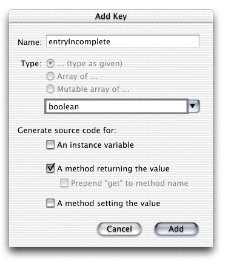

| PATH |

Instead of using an instance variable to determine when the entry is complete, you could provide logic in a method that evaluates the entry at the moment the method is called and decides whether it is complete. By doing this, you can completely remove the variable.
This kind of property is called a derived property, because
while it is a property of the object, it is not directly stored
but is instead derived via logic. You can remove the entryIncomplete variable
and replace it with an entryIncomplete method
without changing the WOD file or altering Main.wo.
entryIncomplete variable
from your Main.java file.Remove
the variable declaration as well as the assignments in the constructor
and in the addUser method.
You can remove the variable itself using WebObjects Builder by Control-clicking
the variable name and choosing "Delete entryIncomplete" . To remove
the other code you must edit the Java file in Project Builder.
entryIncomplete that
provides the same information the variable did.Add the property by choosing Add Key from the Edit Source menu in WebObjects Builder's main window. In the Add Key dialog, deselect the option to generate an instance variable. WebObjects automatically selects the other two options. Deselect the option to generate a method for setting the value, leaving only the option to generate a method for returning the value, as shown in Figure 5-5.
Figure 5-5 Adding a derived property
Modify the entryIncomplete method
so that it looks like the one shown in Listing 5-6.
Listing 5-6 Implementation of entryIncomplete as a derived property
public boolean entryIncomplete() {
if (personName == null || favoriteFood == null || personName.equals("") || favoriteFood.equals("")) {
System.out.println("The entry is incomplete.");
return true;
}
else {
System.out.println("The entry is complete.");
return false;
}
}Notice that the application
runs just as before, and you can now see that WebObjects requests
the entryIncomplete method
twice in the course of displaying the page—once while evaluating
each WOConditional.
You can use this behavior in the future to derive data when it is needed rather than storing it in a variable.
© 2001 Apple Computer, Inc.